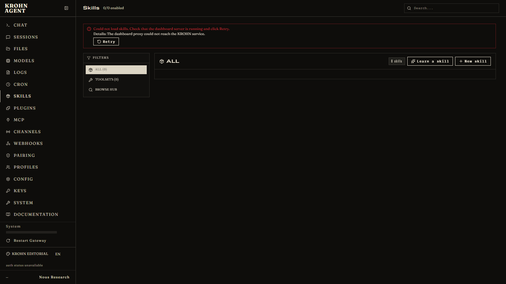

Introducing
The fork of Hermes Agent with a real identity.
KROHN — POWERSHELL — ~/PROJECT/site
\$ krohn -q "
PRODUCT · SESSIONS · REAL BUILD

One agent. Every session.
Memory permanent across sessions. FTS5 search + LLM-summarized recall — KROHN remembers your projects, your preferences, your way of working.
PRODUCT · CRON · NATURAL LANGUAGE

Ask once.
Done forever.
"Every weekday at 9: send the changelog to #progress." KROHN schedules it, runs it, and shows you proof.
PRODUCT · SKILLS · SELF-IMPROVING

44 skills.
Learning by doing.
KROHN writes skills from experience, improves them during use, and grows with you. Open source, MIT, yours.
KROHN · MIT · OPEN SOURCE
KROHN
The first agent that simulates consciousness.
FreeFork of Hermes AgentWindows
github.com/pureform132/krohn